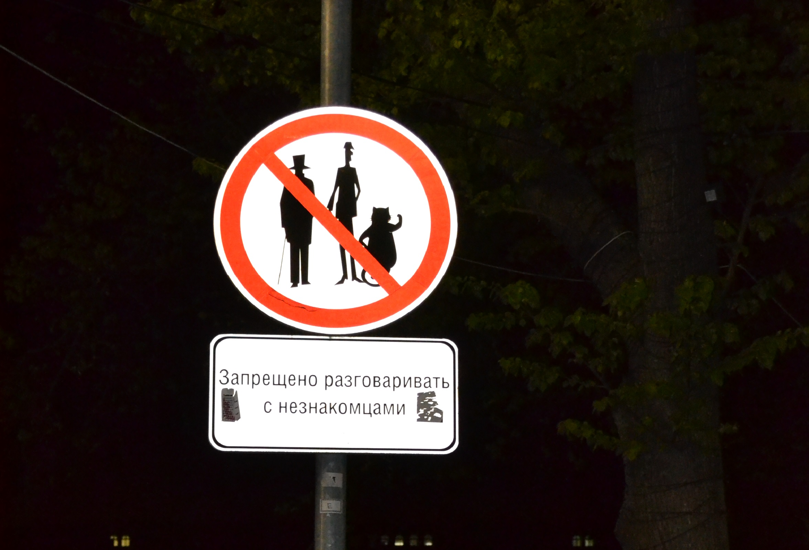
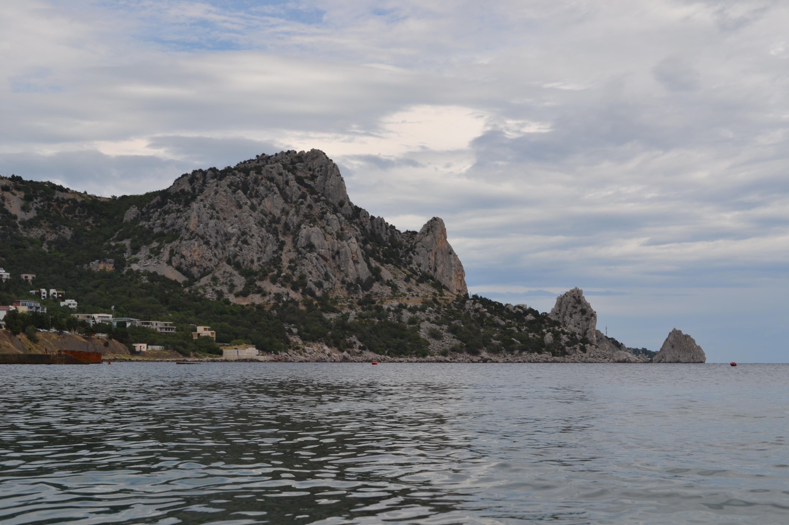

Ночная автобусная экскурсия "По следам Мастера и Маргариты"
 Мы проследовали по маршруту Ивана Бездомного, безуспешно пытавшегося догнать таинственную троицу, прогулялись по Патриаршим прудам.
На прогулке мы увидели:
Мы проследовали по маршруту Ивана Бездомного, безуспешно пытавшегося догнать таинственную троицу, прогулялись по Патриаршим прудам.
На прогулке мы увидели:
- здание, где располагался МАССОЛИТ
- переулок, в котором Мастер встретил Маргариту,
- дом, где проживал критик Латунский,
- особняк Маргариты.
- домик Мастера
- место, где Мастер и Маргарита навсегда прощались с городом
Никогда не разговаривайте с неизвестными.
(М.А.Булгаков "Мастер и Маргарита", 1 глава)

Потомок того самого кота Бегемота.
Творчество поклонников романа.
Леснечный пролет по дороге в знаменитую квартиру.

Путешествие в Крым.
Гора "Кошка".

Окрестности Ялты. Морская прогулка.
Массандровский дворец.
Дворец принадлежал Александру III, затем Николаю II.
Царствующие особы посещая Тавриду часто наведывались в этот дворец, но никогда не оставались в нем ночевать.
 Воронцовский дворец.
Был построен по проекту английского архитектора Эдварда Блора, который лично дворец никогда не посещал.
Воронцовский дворец.
Был построен по проекту английского архитектора Эдварда Блора, который лично дворец никогда не посещал.
 Симферопольский назгул.
Симферопольский назгул.

Поездка на дачу
Тверская область.
Джерри.

Немного юмора.